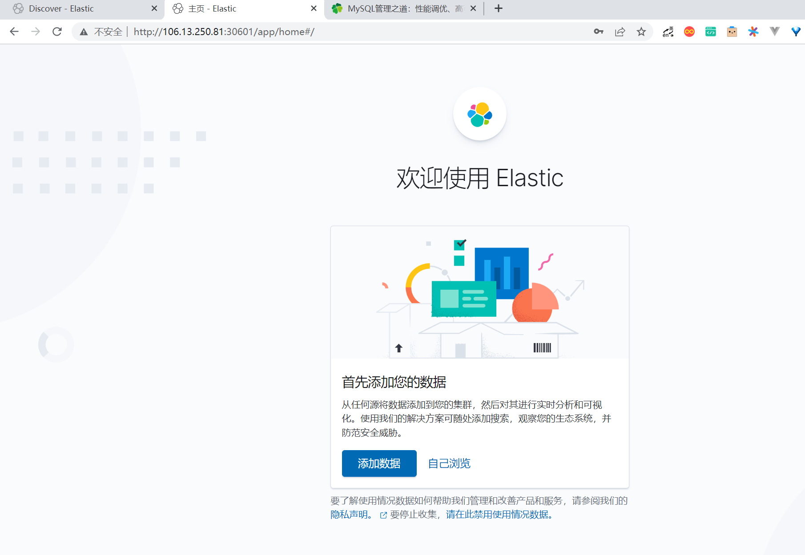
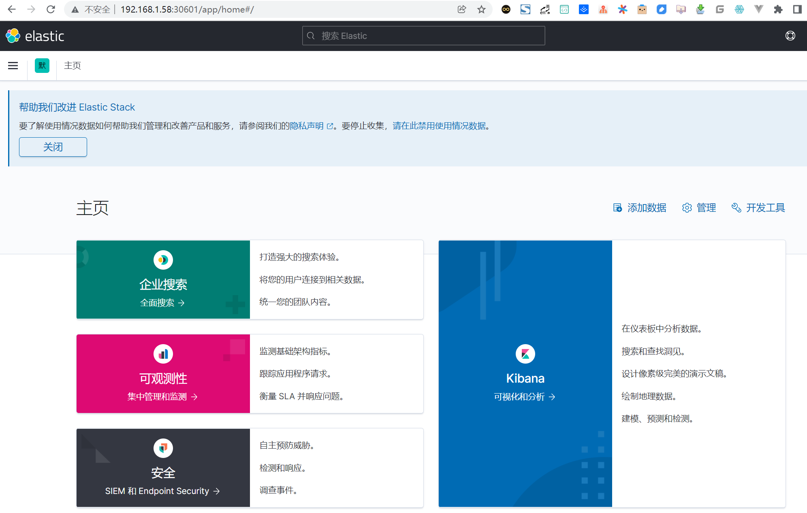
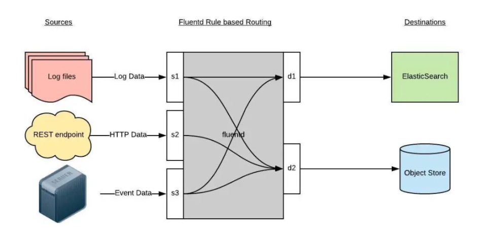

Contents
使用EFKLK搭建Kubernetes日志收集工具栈¶
Elasticsearch
是一个实时的、分布式的可扩展的搜索引擎，允许进行全文、结构化搜索，它通常用于索引和搜索大量日志数据，也可用于搜索许多不同类型的文档。
Elasticsearch 通常与 Kibana 一起部署，Kibana 是 Elasticsearch
的一个功能强大的数据可视化 Dashboard，Kibana 允许你通过 web 界面来浏览
Elasticsearch 日志数据。
Fluentd是一个流行的开源数据收集器，我们将在 Kubernetes
集群节点上安装
Fluentd，通过获取容器日志文件、过滤和转换日志数据，然后将数据传递到
Elasticsearch 集群，在该集群中对其进行索引和存储。
我们先来配置启动一个可扩展的 Elasticsearch 集群，然后在 Kubernetes 集群中创建一个 Kibana 应用，最后通过 DaemonSet 来运行 Fluentd，以便它在每个 Kubernetes 工作节点上都可以运行一个 Pod。
如果你了解 EFK 的基本原理，只是为了测试可以直接使用 Kubernetes 官方提供的 addon 插件的资源清单，
地址：https://github.com/kubernetes/kubernetes/blob/master/cluster/addons/fluentd-elasticsearch/，直接安装即可。
1. 安装 Elasticsearch 集群¶
在创建 Elasticsearch 集群之前，我们先创建一个命名空间，我们将在其中安装所有日志相关的资源对象。
kubectl create ns logging
1.1 环境准备¶
ElasticSearch 安装有最低安装要求，如果安装后 Pod 无法正常启动，请检查是否符合最低要求的配置，要求如下：
节点名称 |
节点类型 |
CPU 配置 |
Memory 配置 |
|---|---|---|---|
k8s-master |
master |
4C |
4Gi |
k8s-node-2-12 |
worker |
8C |
8Gi |
k8s-node-2-13 |
worker |
8C |
8Gi |
k8s-node-2-14 |
worker |
8C |
8Gi |
es集群要求
ElasticSearch节点 |
CPU最小要求 |
Memory 最小要求 |
|---|---|---|
elasticsearch-master |
>2核 |
>2Gi |
elasticsearch-data |
>1核 |
>2Gi |
elasticsearch-client |
>1核 |
>2Gi |
这里我们要安装的 ES 集群环境信息如下所示：
集群名称 |
节点类型 |
副本数目 |
存储大小 |
网络模式 |
描述 |
|---|---|---|---|---|---|
elast icsearch |
master |
3 |
5G |
C lusterIP |
主节点 ，用于控 制ES集群 |
elast icsearch |
Data |
3 |
50G |
C lusterIP |
数据节点 ，用于存 储ES数据 |
elast icsearch |
Client |
2 |
无 |
NodePort |
负责处理 用户请求 ，实现请 求转发， 负载均衡 |
这里我们使用一个 NFS 类型的 StorageClass 来做持久化存储，当然如果你是线上环境建议使用 Local PV 或者 Ceph RBD 之类的存储来持久化 Elasticsearch 的数据。
安装nfs-storageClass存储
helm repo add azure http://mirror.azure.cn/kubernetes/charts/
helm repo update
# 或者下载到本地再安装
helm pull azure/nfs-client-provisioner
tar xvf nfs-client-provisioner-*.tgz
kubectl create ns nfs
helm install efk-nfs-storage -n nfs \
--set nfs.server=192.168.1.46 \
--set nfs.path=/efk \
--set storageClass.name=efk-nfs,storageClass.reclaimPolicy=Retain \
--set storageClass.defaultClass=true \
nfs-client-provisioner
此外由于 ElasticSearch 7.x 版本默认安装了 X-Pack
插件，并且部分功能免费，需要我们配置一些安全证书文件。
1、生成证书文件
# 运行容器生成证书
$ docker run --name elastic-certs -i -w /app elasticsearch:7.12.0 /bin/sh -c \
"elasticsearch-certutil ca --out /app/elastic-stack-ca.p12 --pass '' && \
elasticsearch-certutil cert --name security-master --dns \
security-master --ca /app/elastic-stack-ca.p12 --pass '' --ca-pass '' --out /app/elastic-certificates.p12"
# 从容器中将生成的证书拷贝出来
$ docker cp elastic-certs:/app/elastic-certificates.p12 .
# 删除容器
$ docker rm -f elastic-certs
# 将 pcks12 中的信息分离出来，写入文件
$ openssl pkcs12 -nodes -passin pass:'' -in elastic-certificates.p12 -out elastic-certificate.pem
2、添加证书到 Kubernetes
# 添加证书
$ kubectl create secret -n logging generic elastic-certs --from-file=elastic-certificates.p12
# 设置集群用户名密码
$ kubectl create secret -n logging generic elastic-auth --from-literal=username=elastic --from-literal=password=oschina
1.2 安装ES集群¶
首先添加 ELastic 的 Helm 仓库：
helm repo add elastic https://helm.elastic.co
helm repo update
ElaticSearch 安装需要安装三次，分别安装 Master、Data、Client 节点，
Master 节点负责集群间的管理工作；
Data 节点负责存储数据；
Client 节点负责代理 ElasticSearch Cluster 集群，负载均衡。
首先使用 helm pull 拉取 Chart 并解压：
helm pull elastic/elasticsearch --untar --version 7.12.0
cd elasticsearch
在 Chart 目录下面创建用于 Master 节点安装配置的 values 文件：
values-master.yaml
# values-master.yaml
## 设置集群名称
clusterName: "elasticsearch"
## 设置节点名称
nodeGroup: "master"
## 设置角色
roles:
master: "true"
ingest: "false"
data: "false"
# ============镜像配置============
## 指定镜像与镜像版本
image: "elasticsearch"
imageTag: "7.12.0"
## 副本数
replicas: 3
# ============资源配置============
## JVM 配置参数
esJavaOpts: "-Xmx1g -Xms1g"
## 部署资源配置(生成环境一定要设置大些)
resources:
requests:
cpu: "2000m"
memory: "2Gi"
limits:
cpu: "2000m"
memory: "2Gi"
## 数据持久卷配置
persistence:
enabled: true
## 存储数据大小配置
volumeClaimTemplate:
storageClassName: nfs-storage
accessModes: ["ReadWriteOnce"]
resources:
requests:
storage: 50Gi
# ============安全配置============
## 设置协议，可配置为 http、https
protocol: http
## 证书挂载配置，这里我们挂入上面创建的证书
secretMounts:
- name: elastic-certs
secretName: elastic-certs
path: /usr/share/elasticsearch/config/certs
## 允许您在/usr/share/elasticsearch/config/中添加任何自定义配置文件,例如 elasticsearch.yml
## ElasticSearch 7.x 默认安装了 x-pack 插件，部分功能免费，这里我们配置下
## 下面注掉的部分为配置 https 证书，配置此部分还需要配置 helm 参数 protocol 值改为 https
esConfig:
elasticsearch.yml: |
xpack.security.enabled: true
xpack.security.transport.ssl.enabled: true
xpack.security.transport.ssl.verification_mode: certificate
xpack.security.transport.ssl.keystore.path: /usr/share/elasticsearch/config/certs/elastic-certificates.p12
xpack.security.transport.ssl.truststore.path: /usr/share/elasticsearch/config/certs/elastic-certificates.p12
# xpack.security.http.ssl.enabled: true
# xpack.security.http.ssl.truststore.path: /usr/share/elasticsearch/config/certs/elastic-certificates.p12
# xpack.security.http.ssl.keystore.path: /usr/share/elasticsearch/config/certs/elastic-certificates.p12
## 环境变量配置，这里引入上面设置的用户名、密码 secret 文件
extraEnvs:
- name: ELASTIC_USERNAME
valueFrom:
secretKeyRef:
name: elastic-auth
key: username
- name: ELASTIC_PASSWORD
valueFrom:
secretKeyRef:
name: elastic-auth
key: password
# ============调度配置============
## 设置调度策略
## - hard：只有当有足够的节点时 Pod 才会被调度，并且它们永远不会出现在同一个节点上
## - soft：尽最大努力调度
antiAffinity: "soft"
tolerations:
- operator: "Exists" ##容忍全部污点
然后创建用于 Data 节点安装的 values 文件：
values-data.yaml
# values-data.yaml
# ============设置集群名称============
## 设置集群名称
clusterName: "elasticsearch"
## 设置节点名称
nodeGroup: "data"
## 设置角色
roles:
master: "false"
ingest: "true"
data: "true"
# ============镜像配置============
## 指定镜像与镜像版本
image: "elasticsearch"
imageTag: "7.12.0"
## 副本数(建议设置为3，我这里资源不足只用了1个副本)
replicas: 1
# ============资源配置============
## JVM 配置参数
esJavaOpts: "-Xmx1g -Xms1g"
## 部署资源配置(生成环境一定要设置大些)
resources:
requests:
cpu: "1000m"
memory: "2Gi"
limits:
cpu: "1000m"
memory: "2Gi"
## 数据持久卷配置
persistence:
enabled: true
## 存储数据大小配置
volumeClaimTemplate:
storageClassName: nfs-storage
accessModes: ["ReadWriteOnce"]
resources:
requests:
storage: 200Gi
# ============安全配置============
## 设置协议，可配置为 http、https
protocol: http
## 证书挂载配置，这里我们挂入上面创建的证书
secretMounts:
- name: elastic-certs
secretName: elastic-certs
path: /usr/share/elasticsearch/config/certs
## 允许您在/usr/share/elasticsearch/config/中添加任何自定义配置文件,例如 elasticsearch.yml
## ElasticSearch 7.x 默认安装了 x-pack 插件，部分功能免费，这里我们配置下
## 下面注掉的部分为配置 https 证书，配置此部分还需要配置 helm 参数 protocol 值改为 https
esConfig:
elasticsearch.yml: |
xpack.security.enabled: true
xpack.security.transport.ssl.enabled: true
xpack.security.transport.ssl.verification_mode: certificate
xpack.security.transport.ssl.keystore.path: /usr/share/elasticsearch/config/certs/elastic-certificates.p12
xpack.security.transport.ssl.truststore.path: /usr/share/elasticsearch/config/certs/elastic-certificates.p12
# xpack.security.http.ssl.enabled: true
# xpack.security.http.ssl.truststore.path: /usr/share/elasticsearch/config/certs/elastic-certificates.p12
# xpack.security.http.ssl.keystore.path: /usr/share/elasticsearch/config/certs/elastic-certificates.p12
## 环境变量配置，这里引入上面设置的用户名、密码 secret 文件
extraEnvs:
- name: ELASTIC_USERNAME
valueFrom:
secretKeyRef:
name: elastic-auth
key: username
- name: ELASTIC_PASSWORD
valueFrom:
secretKeyRef:
name: elastic-auth
key: password
# ============调度配置============
## 设置调度策略
## - hard：只有当有足够的节点时 Pod 才会被调度，并且它们永远不会出现在同一个节点上
## - soft：尽最大努力调度
antiAffinity: "soft"
## 容忍配置
tolerations:
- operator: "Exists" ##容忍全部污点
最后一个是用于创建 Client 节点的 values 文件：
values-client.yaml
# values-client.yaml
# ============设置集群名称============
## 设置集群名称
clusterName: "elasticsearch"
## 设置节点名称
nodeGroup: "client"
## 设置角色
roles:
master: "false"
ingest: "false"
data: "false"
# ============镜像配置============
## 指定镜像与镜像版本
image: "elasticsearch"
imageTag: "7.12.0"
## 副本数
replicas: 1
# ============资源配置============
## JVM 配置参数
esJavaOpts: "-Xmx1g -Xms1g"
## 部署资源配置(生成环境一定要设置大些)
resources:
requests:
cpu: "1000m"
memory: "1Gi"
limits:
cpu: "1000m"
memory: "2Gi"
## 数据持久卷配置
persistence:
enabled: false
# ============安全配置============
## 设置协议，可配置为 http、https
protocol: http
## 证书挂载配置，这里我们挂入上面创建的证书
secretMounts:
- name: elastic-certs
secretName: elastic-certs
path: /usr/share/elasticsearch/config/certs
## 允许您在/usr/share/elasticsearch/config/中添加任何自定义配置文件,例如 elasticsearch.yml
## ElasticSearch 7.x 默认安装了 x-pack 插件，部分功能免费，这里我们配置下
## 下面注掉的部分为配置 https 证书，配置此部分还需要配置 helm 参数 protocol 值改为 https
esConfig:
elasticsearch.yml: |
xpack.security.enabled: true
xpack.security.transport.ssl.enabled: true
xpack.security.transport.ssl.verification_mode: certificate
xpack.security.transport.ssl.keystore.path: /usr/share/elasticsearch/config/certs/elastic-certificates.p12
xpack.security.transport.ssl.truststore.path: /usr/share/elasticsearch/config/certs/elastic-certificates.p12
# xpack.security.http.ssl.enabled: true
# xpack.security.http.ssl.truststore.path: /usr/share/elasticsearch/config/certs/elastic-certificates.p12
# xpack.security.http.ssl.keystore.path: /usr/share/elasticsearch/config/certs/elastic-certificates.p12
## 环境变量配置，这里引入上面设置的用户名、密码 secret 文件
extraEnvs:
- name: ELASTIC_USERNAME
valueFrom:
secretKeyRef:
name: elastic-auth
key: username
- name: ELASTIC_PASSWORD
valueFrom:
secretKeyRef:
name: elastic-auth
key: password
# ============Service 配置============
service:
type: NodePort
nodePort: "30200"
现在用上面的 values 文件来安装：
# 安装 master 节点
helm install es-master -f values-master.yaml --namespace logging .
# 安装 data 节点
helm install es-data -f values-data.yaml --namespace logging .
# 安装 client 节点
helm install es-client -f values-client.yaml --namespace logging .
2. 安装Kibana¶
Elasticsearch 集群安装完成后接下来配置安装 Kibana
使用 helm pull 命令拉取 Kibana Chart 包并解压：
helm pull elastic/kibana --untar --version 7.12.0
cd kibana
创建用于安装 Kibana 的 values 文件：
values-prod.yaml
# values-prod.yaml
## 指定镜像与镜像版本
image: "kibana"
imageTag: "7.12.0"
## 配置 ElasticSearch 地址
elasticsearchHosts: "http://elasticsearch-client:9200"
# ============环境变量配置============
## 环境变量配置，这里引入上面设置的用户名、密码 secret 文件
extraEnvs:
- name: "ELASTICSEARCH_USERNAME"
valueFrom:
secretKeyRef:
name: elastic-auth
key: username
- name: "ELASTICSEARCH_PASSWORD"
valueFrom:
secretKeyRef:
name: elastic-auth
key: password
# ============资源配置============
resources:
requests:
cpu: "200m"
memory: "500m"
limits:
cpu: "500m"
memory: "1Gi"
# ============配置 Kibana 参数============
## kibana 配置中添加语言配置，设置 kibana 为中文
kibanaConfig:
kibana.yml: |
i18n.locale: "zh-CN"
# ============Service 配置============
service:
type: NodePort
nodePort: "30601"
使用上面的配置直接安装即可：
helm install kibana -f values-prod.yaml --namespace logging .
下面是安装完成后的 ES 集群和 Kibana 资源：
# kubectl get pod -n logging
NAME READY STATUS RESTARTS AGE
elasticsearch-client-0 1/1 Running 0 44m
elasticsearch-data-0 1/1 Running 0 45m
elasticsearch-master-0 1/1 Running 0 38m
elasticsearch-master-1 1/1 Running 0 38m
elasticsearch-master-2 1/1 Running 0 38m
kibana-kibana-785f84bc84-2ld59 1/1 Running 0 9m39s
# kubectl get svc -n logging
NAME TYPE CLUSTER-IP EXTERNAL-IP PORT(S) AGE
elasticsearch-client NodePort 10.102.19.132 <none> 9200:30200/TCP,9300:30415/TCP 45m
elasticsearch-client-headless ClusterIP None <none> 9200/TCP,9300/TCP 45m
elasticsearch-data ClusterIP 10.98.192.155 <none> 9200/TCP,9300/TCP 46m
elasticsearch-data-headless ClusterIP None <none> 9200/TCP,9300/TCP 46m
elasticsearch-master ClusterIP 10.102.195.24 <none> 9200/TCP,9300/TCP 39m
elasticsearch-master-headless ClusterIP None <none> 9200/TCP,9300/TCP 39m
kibana-kibana NodePort 10.108.125.5 <none> 5601:30601/TCP 10m
上面我们安装 Kibana 的时候指定了 30601 的 NodePort
端口，所以我们可以从任意节点 http://IP:30601 来访问 Kibana。
我们可以看到会跳转到登录页面，让我们输出用户名、密码，这里我们输入上面配置的用户名 elastic、密码 oschina进行登录。
登录成功后点击自己浏览，进入如下所示的 Kibana 主页：
 3. 部署Fluentd¶
Fluentd 是一个高效的日志聚合器，是用 Ruby
编写的，并且可以很好地扩展。对于大部分企业来说，Fluentd
足够高效并且消耗的资源相对较少，另外一个工具Fluent-bit更轻量级，占用资源更少，但是插件相对
Fluentd 来说不够丰富，所以整体来说，Fluentd
更加成熟，使用更加广泛，所以我们这里也同样使用 Fluentd
来作为日志收集工具。
3.1 工作原理¶
Fluentd 通过一组给定的数据源抓取日志数据，处理后（转换成结构化的数据格式）将它们转发给其他服务，比如 Elasticsearch、对象存储等等。Fluentd 支持超过 300 个日志存储和分析服务，所以在这方面是非常灵活的。主要运行步骤如下：
首先 Fluentd 从多个日志源获取数据
结构化并且标记这些数据
然后根据匹配的标签将数据发送到多个目标服务去
fluentd 架构
3.2 配置¶
一般来说我们是通过一个配置文件来告诉 Fluentd 如何采集、处理数据的，下面简单和大家介绍下 Fluentd 的配置方法。
日志源配置¶
比如我们这里为了收集 Kubernetes 节点上的所有容器日志，就需要做如下的日志源配置：
<source>
@id fluentd-containers.log
@type tail # Fluentd 内置的输入方式，其原理是不停地从源文件中获取新的日志。
path /var/log/containers/*.log # 挂载的服务器Docker容器日志地址
pos_file /var/log/es-containers.log.pos
tag raw.kubernetes.* # 设置日志标签
read_from_head true
<parse> # 多行格式化成JSON
@type multi_format # 使用 multi-format-parser 解析器插件
<pattern>
format json # JSON 解析器
time_key time # 指定事件时间的时间字段
time_format %Y-%m-%dT%H:%M:%S.%NZ # 时间格式
</pattern>
<pattern>
format /^(?<time>.+) (?<stream>stdout|stderr) [^ ]* (?<log>.*)$/
time_format %Y-%m-%dT%H:%M:%S.%N%:z
</pattern>
</parse>
</source>
上面配置部分参数说明如下：
id：表示引用该日志源的唯一标识符，该标识可用于进一步过滤和路由结构化日志数据
type：Fluentd 内置的指令，
tail表示 Fluentd 从上次读取的位置通过 tail 不断获取数据，另外一个是http表示通过一个 GET 请求来收集数据。path：
tail类型下的特定参数，告诉 Fluentd 采集/var/log/containers目录下的所有日志，这是 docker 在 Kubernetes 节点上用来存储运行容器 stdout 输出日志数据的目录。pos_file：检查点，如果 Fluentd 程序重新启动了，它将使用此文件中的位置来恢复日志数据收集。
tag：用来将日志源与目标或者过滤器匹配的自定义字符串，Fluentd 匹配源/目标标签来路由日志数据。
路由配置¶
上面是日志源的配置，接下来看看如何将日志数据发送到 Elasticsearch：
<match **>
@id elasticsearch
@type elasticsearch
@log_level info
include_tag_key true
type_name fluentd
host "#{ENV['OUTPUT_HOST']}"
port "#{ENV['OUTPUT_PORT']}"
logstash_format true
<buffer>
@type file
path /var/log/fluentd-buffers/kubernetes.system.buffer
flush_mode interval
retry_type exponential_backoff
flush_thread_count 2
flush_interval 5s
retry_forever
retry_max_interval 30
chunk_limit_size "#{ENV['OUTPUT_BUFFER_CHUNK_LIMIT']}"
queue_limit_length "#{ENV['OUTPUT_BUFFER_QUEUE_LIMIT']}"
overflow_action block
</buffer>
</match>
match：标识一个目标标签，后面是一个匹配日志源的正则表达式，我们这里想要捕获所有的日志并将它们发送给 Elasticsearch，所以需要配置成
**。id：目标的一个唯一标识符。
type：支持的输出插件标识符，我们这里要输出到 Elasticsearch，所以配置成 elasticsearch，这是 Fluentd 的一个内置插件。
log_level：指定要捕获的日志级别，我们这里配置成
info，表示任何该级别或者该级别以上（INFO、WARNING、ERROR）的日志都将被路由到 Elsasticsearch。host/port：定义 Elasticsearch 的地址，也可以配置认证信息，我们的 Elasticsearch 不需要认证，所以这里直接指定 host 和 port 即可。
logstash_format：Elasticsearch 服务对日志数据构建反向索引进行搜索，将 logstash_format 设置为
true，Fluentd 将会以 logstash 格式来转发结构化的日志数据。Buffer：Fluentd 允许在目标不可用时进行缓存，比如，如果网络出现故障或者 Elasticsearch 不可用的时候。缓冲区配置也有助于降低磁盘的 IO。
过滤¶
由于 Kubernetes
集群中应用太多，也还有很多历史数据，所以我们可以只将某些应用的日志进行收集，比如我们只采集具有
logging=true 这个 Label 标签的 Pod 日志，这个时候就需要使用
filter，如下所示：
# 删除无用的属性
<filter kubernetes.**>
@type record_transformer
remove_keys $.docker.container_id,$.kubernetes.container_image_id,$.kubernetes.pod_id,$.kubernetes.namespace_id,$.kubernetes.master_url,$.kubernetes.labels.pod-template-hash
</filter>
# 只保留具有logging=true标签的Pod日志
<filter kubernetes.**>
@id filter_log
@type grep
<regexp>
key $.kubernetes.labels.logging
pattern ^true$
</regexp>
</filter>
3.3 安装¶
要收集 Kubernetes 集群的日志，直接用 DasemonSet 控制器来部署 Fluentd 应用，这样，它就可以从 Kubernetes 节点上采集日志，确保在集群中的每个节点上始终运行一个 Fluentd 容器。当然可以直接使用 Helm 来进行一键安装，为了能够了解更多实现细节，我们这里还是采用手动方法来进行安装。
首先，我们通过 ConfigMap 对象来指定 Fluentd
配置文件，新建fluentd-configmap.yaml文件，文件内容如下：
kind: ConfigMap
apiVersion: v1
metadata:
name: fluentd-conf
namespace: logging
data:
# 容器日志
containers.input.conf: |-
<source>
@id fluentd-containers.log
@type tail # Fluentd 内置的输入方式，其原理是不停地从源文件中获取新的日志
path /var/log/containers/*.log # Docker 容器日志路径
pos_file /var/log/es-containers.log.pos # 记录读取的位置
tag raw.kubernetes.* # 设置日志标签
read_from_head true # 从头读取
<parse> # 多行格式化成JSON
# 可以使用我们介绍过的 multiline 插件实现多行日志
@type multi_format # 使用 multi-format-parser 解析器插件
<pattern>
format json # JSON解析器
time_key time # 指定事件时间的时间字段
time_format %Y-%m-%dT%H:%M:%S.%NZ # 时间格式
</pattern>
<pattern>
format /^(?<time>.+) (?<stream>stdout|stderr) [^ ]* (?<log>.*)$/
time_format %Y-%m-%dT%H:%M:%S.%N%:z
</pattern>
</parse>
</source>
# 在日志输出中检测异常(多行日志)，并将其作为一条日志转发
# https://github.com/GoogleCloudPlatform/fluent-plugin-detect-exceptions
<match raw.kubernetes.**> # 匹配tag为raw.kubernetes.**日志信息
@id raw.kubernetes
@type detect_exceptions # 使用detect-exceptions插件处理异常栈信息
remove_tag_prefix raw # 移除 raw 前缀
message log
multiline_flush_interval 5
</match>
<filter **> # 拼接日志
@id filter_concat
@type concat # Fluentd Filter 插件，用于连接多个日志中分隔的多行日志
key message
multiline_end_regexp /\n$/ # 以换行符“\n”拼接
separator ""
</filter>
# 添加 Kubernetes metadata 数据
<filter kubernetes.**>
@id filter_kubernetes_metadata
@type kubernetes_metadata
</filter>
# 修复 ES 中的 JSON 字段
# 插件地址：https://github.com/repeatedly/fluent-plugin-multi-format-parser
<filter kubernetes.**>
@id filter_parser
@type parser # multi-format-parser多格式解析器插件
key_name log # 在要解析的日志中指定字段名称
reserve_data true # 在解析结果中保留原始键值对
remove_key_name_field true # key_name 解析成功后删除字段
<parse>
@type multi_format
<pattern>
format json
</pattern>
<pattern>
format none
</pattern>
</parse>
</filter>
# 删除一些多余的属性
<filter kubernetes.**>
@type record_transformer
remove_keys $.docker.container_id,$.kubernetes.container_image_id,$.kubernetes.pod_id,$.kubernetes.namespace_id,$.kubernetes.master_url,$.kubernetes.labels.pod-template-hash
</filter>
# 只保留具有logging=true标签的Pod日志
<filter kubernetes.**>
@id filter_log
@type grep
<regexp>
key $.kubernetes.labels.logging
pattern ^true$
</regexp>
</filter>
###### 监听配置，一般用于日志聚合用 ######
forward.input.conf: |-
# 监听通过TCP发送的消息
<source>
@id forward
@type forward
</source>
output.conf: |-
<match **>
@id elasticsearch
@type elasticsearch
@log_level info
include_tag_key true
host elasticsearch-client
port 9200
user elastic # FLUENT_ELASTICSEARCH_USER | FLUENT_ELASTICSEARCH_PASSWORD
password oschina
logstash_format true
logstash_prefix k8s
request_timeout 30s
<buffer>
@type file
path /var/log/fluentd-buffers/kubernetes.system.buffer
flush_mode interval
retry_type exponential_backoff
flush_thread_count 2
flush_interval 5s
retry_forever
retry_max_interval 30
chunk_limit_size 2M
queue_limit_length 8
overflow_action block
</buffer>
</match>
上面配置文件中我们只配置了 docker
容器日志目录，收集到数据经过处理后发送到 elasticsearch-client:9200
服务。
然后新建一个fluentd-daemonset.yaml的文件，文件内容如下：
apiVersion: v1
kind: ServiceAccount
metadata:
name: fluentd-es
namespace: logging
labels:
k8s-app: fluentd-es
kubernetes.io/cluster-service: "true"
addonmanager.kubernetes.io/mode: Reconcile
---
kind: ClusterRole
apiVersion: rbac.authorization.k8s.io/v1
metadata:
name: fluentd-es
labels:
k8s-app: fluentd-es
kubernetes.io/cluster-service: "true"
addonmanager.kubernetes.io/mode: Reconcile
rules:
- apiGroups:
- ""
resources:
- "namespaces"
- "pods"
verbs:
- "get"
- "watch"
- "list"
---
kind: ClusterRoleBinding
apiVersion: rbac.authorization.k8s.io/v1
metadata:
name: fluentd-es
labels:
k8s-app: fluentd-es
kubernetes.io/cluster-service: "true"
addonmanager.kubernetes.io/mode: Reconcile
subjects:
- kind: ServiceAccount
name: fluentd-es
namespace: logging
apiGroup: ""
roleRef:
kind: ClusterRole
name: fluentd-es
apiGroup: ""
---
apiVersion: apps/v1
kind: DaemonSet
metadata:
name: fluentd
namespace: logging
labels:
app: fluentd
kubernetes.io/cluster-service: "true"
spec:
selector:
matchLabels:
app: fluentd
template:
metadata:
labels:
app: fluentd
kubernetes.io/cluster-service: "true"
spec:
tolerations:
- key: node-role.kubernetes.io/master
effect: NoSchedule
serviceAccountName: fluentd-es
containers:
- name: fluentd
image: quay.io/fluentd_elasticsearch/fluentd:v3.2.0
volumeMounts:
- name: fluentconfig
mountPath: /etc/fluent/config.d
- name: varlog
mountPath: /var/log
- name: varlibdockercontainers
mountPath: /var/lib/docker/containers
readOnly: true
nodeSelector:
beta.kubernetes.io/fluentd-ds-ready: "true"
terminationGracePeriodSeconds: 30
volumes:
- name: fluentconfig
configMap:
name: fluentd-conf
- name: varlog
hostPath:
path: /var/log
- name: varlibdockercontainers
hostPath:
path: /var/lib/docker/containers
我们将上面创建的 fluentd-config 这个 ConfigMap 对象通过 volumes 挂载到了 Fluentd 容器中，另外为了能够灵活控制哪些节点的日志可以被收集，所以我们这里还添加了一个 nodSelector 属性：
nodeSelector:
beta.kubernetes.io/fluentd-ds-ready: "true"
意思就是要想采集节点的日志，那么我们就需要给节点打上上面的标签。
!!! info “提示”
如果你需要在其他节点上采集日志，则需要给对应节点打上标签，使用如下命令：kubectl label nodes node名 beta.kubernetes.io/fluentd-ds-ready=true。
kubectl label nodes giteego-k8s-n1 beta.kubernetes.io/fluentd-ds-ready=true
kubectl label nodes giteego-k8s-n2 beta.kubernetes.io/fluentd-ds-ready=true
kubectl label nodes giteego-k8s-n3 beta.kubernetes.io/fluentd-ds-ready=true
kubectl label nodes giteego-k8s-n4 beta.kubernetes.io/fluentd-ds-ready=true
另外由于我们的集群使用的是 kubeadm 搭建的，默认情况下 master 节点有污点，所以如果要想也收集 master 节点的日志，则需要添加上容忍：
tolerations:
- operator: Exists
另外需要注意的地方是，如果更改了 docker 的根目录，则在 volumes 和 volumeMount 里面都需要更改，保持一致
分别创建上面的 ConfigMap 对象和 DaemonSet：
$ kubectl create -f fluentd-configmap.yaml
configmap "fluentd-conf" created
$ kubectl create -f fluentd-daemonset.yaml
serviceaccount "fluentd-es" created
clusterrole.rbac.authorization.k8s.io "fluentd-es" created
clusterrolebinding.rbac.authorization.k8s.io "fluentd-es" created
daemonset.apps "fluentd" created
创建完成后，查看对应的 Pods 列表，检查是否部署成功：
$ kubectl get pods -n logging
NAME READY STATUS RESTARTS AGE
elasticsearch-client-0 1/1 Running 0 98m
elasticsearch-data-0 1/1 Running 0 99m
elasticsearch-master-0 1/1 Running 0 92m
elasticsearch-master-1 1/1 Running 0 92m
elasticsearch-master-2 1/1 Running 0 92m
fluentd-5mqjr 1/1 Running 0 6m58s
fluentd-7pzm8 1/1 Running 0 6m58s
fluentd-c9ppc 1/1 Running 0 6m58s
fluentd-d8dvr 1/1 Running 0 6m58s
fluentd-ms7br 1/1 Running 0 6m58s
fluentd-qtspb 1/1 Running 0 6m58s
fluentd-tp9fj 1/1 Running 0 6m58s
fluentd-wfv8q 1/1 Running 0 6m58s
kibana-kibana-785f84bc84-2ld59 1/1 Running 0 63m
Fluentd 启动成功后，这个时候就可以发送日志到 ES
了，但是我们这里是过滤了只采集具有 logging=true 标签的 Pod
日志，所以现在还没有任何数据会被采集。
下面我们部署一个简单的测试应用，
新建counter.yaml文件，文件内容如下：
apiVersion: v1
kind: Pod
metadata:
name: counter
labels:
logging: "true" # 一定要具有该标签才会被采集
spec:
containers:
- name: count
image: busybox
args:
[
/bin/sh,
-c,
'i=0; while true; do echo "$i: $(date)"; i=$((i+1)); sleep 1; done',
]
该 Pod 只是简单将日志信息打印到 stdout，所以正常来说 Fluentd
会收集到这个日志数据，在 Kibana 中也就可以找到对应的日志数据了，使用
kubectl 工具创建该 Pod：
$ kubectl create -f counter.yaml
$ kubectl get pod
NAME READY STATUS RESTARTS AGE
counter 1/1 Running 0 29s
Pod 创建并运行后，回到 Kibana Dashboard 页面，点击左侧最下面的
Management -> Stack Management，进入管理页面，点击左侧
Kibana 下面的 索引模式，点击 创建索引模式
开始导入索引数据：
在这里可以配置我们需要的 Elasticsearch 索引，前面 Fluentd
配置文件中我们采集的日志使用的是 logstash 格式，定义了一个 k8s
的前缀，所以这里只需要在文本框中输入 k8s-* 即可匹配到 Elasticsearch
集群中采集的 Kubernetes 集群日志数据，然后点击下一步，进入以下页面
在该页面中配置使用哪个字段按时间过滤日志数据，在下拉列表中，选择@timestamp字段，然后点击
创建索引模式，创建完成后，点击左侧导航菜单中的
Discover，然后就可以看到一些直方图和最近采集到的日志数据了：
我们也可以通过其他元数据来过滤日志数据，比如您可以单击任何日志条目以查看其他元数据，如容器名称，Kubernetes 节点，命名空间等。
4. 安装 Kafka¶
对于大规模集群来说，日志数据量是非常巨大的，如果直接通过 Fluentd
将日志打入 Elasticsearch，对 ES
来说压力是非常巨大的，我们可以在中间加一层消息中间件来缓解 ES
的压力，一般情况下我们会使用 Kafka，然后可以直接使用
kafka-connect-elasticsearch 这样的工具将数据直接打入
ES，也可以在加一层 Logstash 去消费 Kafka 的数据，然后通过 Logstash
把数据存入 ES，这里我们来使用 Logstash 这种模式来对日志收集进行优化。
首先在 Kubernetes 集群中安装 Kafka，同样这里使用 Helm 进行安装：
$ helm repo add bitnami https://charts.bitnami.com/bitnami
$ helm repo update
首先使用 helm pull 拉取 Chart 并解压：
$ helm pull bitnami/kafka --untar --version 12.17.5
$ cd kafka
这里面我们指定使用一个 StorageClass 来提供持久化存储，在 Chart
目录下面创建用于安装的 values 文件：
# values-prod.yaml
## Persistence parameters
##
persistence:
enabled: true
storageClass: "efk-nfs"
accessModes:
- ReadWriteOnce
size: 5Gi
## Mount point for persistence
mountPath: /bitnami/kafka
# 配置zk volumes
zookeeper:
enabled: true
persistence:
enabled: true
storageClass: "efk-nfs"
accessModes:
- ReadWriteOnce
size: 8Gi
直接使用上面的 values 文件安装 kafka：
$ helm install kafka -f values-prod.yaml --namespace logging .
Release "kafka" does not exist. Installing it now.
NAME: kafka
LAST DEPLOYED: Tue Apr 27 18:46:01 2021
NAMESPACE: logging
STATUS: deployed
REVISION: 1
TEST SUITE: None
NOTES:
** Please be patient while the chart is being deployed **
Kafka can be accessed by consumers via port 9092 on the following DNS name from within your cluster:
kafka.logging.svc.cluster.local
Each Kafka broker can be accessed by producers via port 9092 on the following DNS name(s) from within your cluster:
kafka-0.kafka-headless.logging.svc.cluster.local:9092
To create a pod that you can use as a Kafka client run the following commands:
kubectl run kafka-client --restart='Never' --image docker.io/bitnami/kafka:2.8.0-debian-10-r0 --namespace logging --command -- sleep infinity
kubectl exec --tty -i kafka-client --namespace logging -- bash
PRODUCER:
kafka-console-producer.sh \
--broker-list kafka-0.kafka-headless.logging.svc.cluster.local:9092 \
--topic test
CONSUMER:
kafka-console-consumer.sh \
--bootstrap-server kafka.logging.svc.cluster.local:9092 \
--topic test \
--from-beginning
安装完成后我们可以使用上面的提示来检查 Kafka 是否正常运行：
$ kubectl get pods -n logging -l app.kubernetes.io/instance=kafka
NAME READY STATUS RESTARTS AGE
kafka-0 1/1 Running 0 43m
kafka-zookeeper-0 1/1 Running 0 43m
用下面的命令创建一个 Kafka 的测试客户端 Pod：
$ kubectl run kafka-client --restart='Never' --image docker.io/bitnami/kafka:2.8.0-debian-10-r0 --namespace logging --command -- sleep infinity
pod/kafka-client created
然后启动一个终端进入容器内部生产消息：
# 生产者
$ kubectl exec --tty -i kafka-client --namespace logging -- bash
I have no name!@kafka-client:/$ kafka-console-producer.sh --broker-list kafka-0.kafka-headless.logging.svc.cluster.local:9092 --topic test
>hello kafka on k8s
>
启动另外一个终端进入容器内部消费消息：
# 消费者
$ kubectl exec --tty -i kafka-client --namespace logging -- bash
I have no name!@kafka-client:/$ kafka-console-consumer.sh --bootstrap-server kafka.logging.svc.cluster.local:9092 --topic test --from-beginning
hello kafka on k8s
如果在消费端看到了生产的消息数据证明我们的 Kafka 已经运行成功了。
5. Fluentd 配置 Kafka¶
现在有了 Kafka，我们就可以将 Fluentd 的日志数据输出到 Kafka 了，只需要将
Fluentd 配置中的 <match> 更改为使用 Kafka 插件即可，但是在 Fluentd
中输出到 Kafka，需要使用到 fluent-plugin-kafka
插件，所以需要我们自定义下 Docker 镜像，最简单的做法就是在上面 Fluentd
镜像的基础上新增 kafka 插件即可，Dockerfile 文件如下所示：
Dockerfile
FROM quay.io/fluentd_elasticsearch/fluentd:v3.2.0
RUN echo "source 'https://mirrors.tuna.tsinghua.edu.cn/rubygems/'" > Gemfile && gem install bundler
RUN gem install fluent-plugin-kafka -v 0.16.1 --no-document
使用上面的 Dockerfile 文件构建一个 Docker
镜像即可，我这里构建过后的镜像名为
registry.cn-hangzhou.aliyuncs.com/hu_k8s/fluent-plugin-kafka-0.16.1。接下来替换
Fluentd 的 Configmap 对象中的 <match> 部分，如下所示：
# fluentd-configmap.yaml
kind: ConfigMap
apiVersion: v1
metadata:
name: fluentd-conf
namespace: logging
data:
.....
output.conf: |-
<match **>
@id kafka
@type kafka2
@log_level info
# list of seed brokers
brokers kafka-0.kafka-headless.logging.svc.cluster.local:9092
use_event_time true
# topic settings
topic_key k8slog
default_topic messages # 注意，kafka中消费使用的是这个topic
# buffer settings
<buffer k8slog>
@type file
path /var/log/td-agent/buffer/td
flush_interval 3s
</buffer>
# data type settings
<format>
@type json
</format>
# producer settings
required_acks -1
compression_codec gzip
</match>
注意：node节点会创建一个/var/log/td-agent/buffer/td目录。此目录数据很大，考虑到磁盘空间的问题，可以将buffer settings为memory的方式
output.conf: |-
<match **>
@id kafka
@type kafka2
@log_level info
# list of seed brokers
brokers kafka-0.kafka-headless.logging.svc.cluster.local:9092
use_event_time true
# topic settings
topic_key k8slog
default_topic messages # 注意，kafka中消费使用的是这个topic
# buffer settings
<buffer k8slog>
@type memory
path /var/log/td-agent/buffer/td
flush_interval 3s
</buffer>
# data type settings
<format>
@type json
</format>
# producer settings
required_acks -1
compression_codec gzip
</match>
然后替换运行的 Fluentd 镜像：
# fluentd-daemonset.yaml
image: registry.cn-hangzhou.aliyuncs.com/hu_k8s/fluent-plugin-kafka-0.16.1
直接更新 Fluentd 的 Configmap 与 DaemonSet 资源对象即可：
$ kubectl apply -f fluentd-configmap.yaml
$ kubectl apply -f fluentd-daemonset.yaml
更新成功后我们可以使用上面的测试 Kafka 客户端来验证是否有日志数据：
$ kubectl exec --tty -i kafka-client --namespace logging -- bash
I have no name!@kafka-client:/$ kafka-console-consumer.sh --bootstrap-server kafka.logging.svc.cluster.local:9092 --topic messages --from-beginning
{"stream":"stdout","docker":{},"kubernetes":{"container_name":"count","namespace_name":"default","pod_name":"counter","container_image":"busybox:latest","host":"node1","labels":{"logging":"true"}},"message":"43883: Tue Apr 27 12:16:30 UTC 2021\n"}
......
6. 安装 Logstash¶
虽然数据从 Kafka 到 Elasticsearch 的方式多种多样，我们这里还是采用更加流行的 Logstash 方案，上面我们已经将日志从 Fluentd 采集输出到 Kafka 中去了，接下来我们使用 Logstash 来连接 Kafka 与 Elasticsearch 间的日志数据。
首先使用 helm pull 拉取 Chart 并解压：
$ helm pull elastic/logstash --untar --version 7.12.0
$ cd logstash
同样在 Chart 根目录下面创建用于安装的 Values 文件，如下所示：
values-prod.yaml
# values-prod.yaml
fullnameOverride: logstash
persistence:
enabled: true
logstashConfig:
logstash.yml: |
http.host: 0.0.0.0
# 如果启用了xpack，需要做如下配置
xpack.monitoring.enabled: true
xpack.monitoring.elasticsearch.hosts: ["http://elasticsearch-client:9200"]
xpack.monitoring.elasticsearch.username: "elastic"
xpack.monitoring.elasticsearch.password: "oschina2022qazwsx"
# 要注意下格式
logstashPipeline:
logstash.conf: |
input { kafka { bootstrap_servers => "kafka-0.kafka-headless.logging.svc.cluster.local:9092" codec => json consumer_threads => 3 topics => ["messages"] } }
filter {} # 过滤配置（比如可以删除key、添加geoip等等）
output { elasticsearch { hosts => [ "elasticsearch-client:9200" ] user => "elastic" password => "oschina2022qazwsx" index => "logstash-k8s-%{+YYYY.MM.dd}" } stdout { codec => rubydebug } }
volumeClaimTemplate:
accessModes: ["ReadWriteOnce"]
storageClassName: efk-nfs
resources:
requests:
storage: 10Gi
其中最重要的就是通过 logstashPipeline 配置 logstash
数据流的处理配置，通过 input 指定日志源 kafka 的配置，通过
output 输出到 Elasticsearch，同样直接使用上面的 Values 文件安装
logstash 即可：
$ helm upgrade --install logstash -f values-prod.yaml --namespace logging .
Release "logstash" does not exist. Installing it now.
NAME: logstash
LAST DEPLOYED: Tue Apr 27 20:22:45 2021
NAMESPACE: logging
STATUS: deployed
REVISION: 1
TEST SUITE: None
NOTES:
1. Watch all cluster members come up.
$ kubectl get pods --namespace=logging -l app=logstash -w
安装启动完成后可以查看 logstash 的日志：
$ kubectl get pods --namespace=logging -l app=logstash
NAME READY STATUS RESTARTS AGE
logstash-0 1/1 Running 0 2m8s
$ kubectl logs -f logstash-0 -n logging
......
{
"docker" => {},
"stream" => "stdout",
"message" => "46921: Tue Apr 27 13:07:15 UTC 2021\n",
"kubernetes" => {
"host" => "node1",
"labels" => {
"logging" => "true"
},
"pod_name" => "counter",
"container_image" => "busybox:latest",
"container_name" => "count",
"namespace_name" => "default"
},
"@timestamp" => 2021-04-27T13:07:15.761Z,
"@version" => "1"
}
由于我们启用了 debug 日志调试，所以我们可以在 logstash 的日志中看到我们采集的日志消息，到这里证明我们的日志数据就获取成功了。
现在我们可以登录到 Kibana 可以看到有如下所示的索引数据了。
然后同样创建索引模式，匹配上面的索引即可。